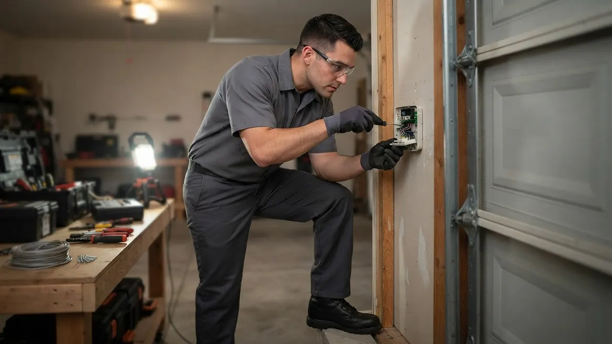

Your local team · Lancaster Village
Garage Door Repair in Lancaster Village, Done Right the First Time
When your garage door quits, you need Garage Door Repair in Lancaster Village that shows up fast and fixes it for good. We cover Lancaster Village North and South, Lancaster Avenue, Village Road, and the Kirkwood Highway corridor with same-day appointments and 24/7 emergency service. Our techs carry torsion springs, galvanized steel cables, and LiftMaster and Chamberlain openers on every truck. One call, one visit, door working again.
Local knowledge
Garage Door Repair in Lancaster Village You Can Count On
Garage Door Repair in Lancaster Village is the work of getting a stuck, broken, or noisy door back on track, and it is what our crews do across this neighborhood every week. We have served Lancaster Village since 2010, working out of Wilmington and covering the 19805 and 19808 ZIP codes along Lancaster Avenue, Village Road, and the Kirkwood Highway corridor. Most of the housing stock here is suburban single-family homes with detached garages, and that shapes the work: detached garages take more weather, their openers run on longer wiring runs, and their tracks collect more debris from the tree-lined streets. We handle torsion spring replacement, opener motor failure, snapped cables, and doors knocked off track. If you have been searching for a garage door company Lancaster Village homeowners actually recommend, we are 16 years into earning that. Call (302) 556-5080 and we will get a tech headed your way.

Services available in Lancaster Village
Garage Door Services Available in Lancaster Village
Every service we offer runs through Lancaster Village, from a $180 spring swap to a full custom door install. The mix here leans toward repair rather than replacement: detached garages, older openers, and doors that take a beating from tree debris and winter cold. If you have been typing garage door service near Lancaster Village into your phone at 9 p.m. with a door stuck open, we answer and we dispatch. Here is what we do most in this neighborhood.
01
Garage Door Repair
General repair is our most-called service in Lancaster Village. We diagnose the door on arrival, then fix what is actually broken: a bent track bracket, a stripped gear in the opener, a roller that has flat-spotted. Detached garages off Village Road and Lancaster Avenue make up most of these calls.
View service 02Garage Door Installation
New door installs in Lancaster Village usually mean replacing a 20-year-old steel door on a detached garage. We measure the opening, match the style to the house, and install with new track, rollers, and bottom seal. Clopay and Amarr are our most-requested lines here.
View service 03Garage Door Opener Repair
Opener repair calls in Lancaster Village spike in cold weather. Motors strain, gears strip, and logic boards fail on openers that are 12 to 15 years old. We repair LiftMaster, Chamberlain, Genie, and Craftsman units and tell you honestly when a repair beats a replacement.
View service 04Garage Door Opener Installation
We install belt-drive and chain-drive openers throughout Lancaster Village, including the detached-garage setups that need longer wiring runs and a fresh safety-sensor alignment. Most installs take two to three hours, and we program your remotes and keypad before we leave.
View service 05Garage Door Spring Repair
Spring repair is the number-one job in Lancaster Village. Torsion springs here last roughly 7 to 10 years, and the freeze-thaw swings off Kirkwood Highway shorten that. We replace both springs at once, use proper winding bars, and never leave a door running on one spring.
View service 06Garage Door Cable Repair
A snapped cable usually means the door is hanging crooked or jammed. We replace galvanized steel cables in pairs, inspect the cable drums for wear, and re-level the door. Most Lancaster Village cable jobs are done in under two hours.
View serviceBuilt around the city
How We Execute Garage Door Repair in Lancaster Village
Garage Door Repair in Lancaster Village runs on a simple pattern: you call, we ask what the door is doing, and we send a tech with the parts that failure usually needs. For a detached garage off Village Road, that often means torsion springs, a socket wrench set, winding bars, and C-clamps on the truck. For an attached garage near Lancaster Avenue, it might mean an opener logic board and a set of nylon rollers. We work to the UL 325 safety standard on every job, which means we test the safety reverse and the photo-eye sensors before we leave, no exceptions. If you need 24/7 garage door repair Lancaster Village DE residents can actually reach at 2 a.m., that is us. Scheduling is straightforward: morning calls usually get an afternoon visit, and we text you when the tech is on the way. Parking is rarely an issue on the residential blocks, though we do ask for driveway access so we can test the door through a full cycle.
Twigs, leaves, and seed pods collect in the track channel and cause rollers to bind or jump. Over a season, that debris wears rollers faster and puts extra strain on the opener. We clear and inspect the full track on every repair call, not just the part that failed. If the rollers are worn from debris, we replace them in the same visit so you are not back on the phone in a month.
Unheated detached garages in Lancaster Village swing from below freezing to above freezing repeatedly in winter. That cycle stiffens grease, cracks nylon rollers, and shortens torsion spring life. We use cold-rated lubricants and inspect springs and rollers with freeze-thaw wear in mind. On detached garages we often recommend a heavier torsion spring rated for more cycles so you get more years between replacements.
Many Lancaster Village homes still run original openers from the 2000s. Gears strip, logic boards fail, and remotes lose programming. These failures tend to cluster in cold weather. We carry gear sets, logic boards, and remotes for LiftMaster, Chamberlain, Genie, and Craftsman units. If a repair makes sense, we repair. If the unit is past its useful life, we tell you and quote a replacement with real numbers.
Every opener we install or repair in Lancaster Village must meet UL 325, which covers the safety reverse and photo-eye sensor requirements. We test both on every job and will not sign off on a door that fails the test.
This standard covers installation and labeling requirements for sectional doors. It matters when we install a new door or replace panels in Lancaster Village, because it governs how the door is assembled and what safety labels must be present.
Opener wiring and any new circuit work must meet NEC, and the work must be done under a valid Delaware contractor license. We handle the electrical side of opener installs to code and pull the right permits when a job requires them.
Common local problems
Common Garage Door Problems in Lancaster Village
Broken torsion spring on detached garage doors
Opener motor failure on older units
Doors knocked off track by debris or impact
Sensor misalignment and dirty photo-eyes
Warning signs
Signs You Need Garage Door Repair in Lancaster Village
This is almost always a sensor issue. Either the photo-eye is misaligned, the lens is dirty, or the wiring has a loose connection. It is a quick fix, but it will not fix itself, and a door that will not close is a security problem. Call us the same day.
That bang is usually a torsion spring snapping. The door becomes extremely heavy and dangerous to operate manually. Do not try to open it. Call us immediately and we will dispatch a tech with the right springs and winding bars.
A crooked door usually means a snapped cable or a broken roller on one side. Running the opener in this condition can bend the track and damage panels. Stop using the door and call for a same-day repair.
If you hear the motor but the door stays put, the drive gear or chain has likely failed. This is common on openers over 10 years old. It is a repair, not a replacement, in most cases, and we can usually fix it in one visit.
Noise means friction, and friction wears out parts. Worn rollers, dry hinges, and misaligned tracks all cause it. A tune-up now is far cheaper than a spring or opener replacement later. This is the easiest sign to act on.
Pricing and expectations
Garage Door Repair Pricing in Lancaster Village
Typical 2026 pricing for Garage Door Repair in Lancaster Village runs from about $180 for a simple roller or sensor fix up to $650 or more for a full spring and cable replacement on a heavy door. Most jobs land in the $250 to $450 range. We quote the price before we start, and the number we say is the number you pay. No trip charges inside the 19805 and 19808 ZIP codes, and no surprise add-ons after the work is done. If you want the most affordable garage door repair Lancaster Village DE has to offer without cutting corners on parts, we are built for that: we repair what can be repaired and only recommend replacement when the math actually favors it.
A sensor realignment or remote reprogram is a quick, low-cost visit. A snapped torsion spring or a broken cable is a bigger job with more labor and parts. We tell you which one you have before we start.
A single-car detached garage door in Lancaster Village takes lighter springs and less labor than a double-car insulated door. Heavier doors need higher-cycle springs and sometimes upgraded hardware, which affects the total.
Common parts like torsion springs, rollers, and LiftMaster logic boards are on our trucks. Less common parts, like a specific panel profile or a discontinued opener gear, may need a same-week order, which shifts the timeline but not the labor rate.
We know the route
Navigating Lancaster Village: Landmarks We Use
Lancaster Village is easy to navigate once you know the main corridors. We use Lancaster Avenue and Kirkwood Highway as our primary east-west routes, and Village Road as the main north-south spine through the residential blocks. The Lancaster Village Shopping Center is a useful midpoint for dispatching techs to the surrounding streets. When you call, we ask for the nearest cross street rather than a landmark, because that gets us to your driveway faster than anything else.
Lancaster Village Shopping Center
A central commercial anchor on Lancaster Avenue that we use as a dispatch midpoint. It helps us orient techs to the surrounding residential streets quickly, especially for calls placed from the northern blocks.
Lancaster Avenue
The main commercial corridor through the neighborhood. We use it as a primary route when heading to calls on the eastern side of Lancaster Village, and it connects directly to the Kirkwood Highway interchange.
Village Road
The main residential spine through Lancaster Village. Most of our detached-garage calls are on or just off Village Road, so it is the first route we check when dispatching a tech to this area.
Kirkwood Highway
The major arterial on the southern edge of the neighborhood. It is our fastest route into Lancaster Village from the Wilmington side and connects us to commercial calls along the corridor.
Delaware Park
A well-known local landmark that helps orient techs working the western edge of the Lancaster Village service area. We use it as a reference point when routing to nearby residential streets.
Lancaster Village Shopping Center
A neighborhood retail center on Lancaster Avenue with a mix of small businesses and service tenants. We handle commercial door repair for tenants here when a rolling or sectional door fails.
Lancaster Village service coverage
Lancaster Village Neighborhoods We Serve
We cover every block of Lancaster Village, from the detached-garage streets off Village Road to the busier residential edges along Lancaster Avenue and the Kirkwood Highway corridor. If you are inside the 19805 or 19808 ZIP code, you are in our regular service area, and most calls here get a same-day visit.
Lancaster Village NorthLancaster Village SouthLancaster AvenueVillage Road
Delaware Express Garage Door Service3601 Old Capitol Trl A5, Wilmington, DE 19808, United States, Wilmington, Delaware
Local results
Recent Garage Door Repair Jobs in Lancaster Village
A homeowner on Village Road called at 7 a.m. with a door stuck half-open and a loud bang the night before. The torsion spring had snapped.
We dispatched a tech with a matched pair of torsion springs in the correct wire gauge. He used winding bars and C-clamps to safely release tension, replaced both springs, and re-balanced the door. Total on-site time was about 90 minutes. Door was cycling smoothly by mid-morning. The homeowner avoided a full door replacement and paid a fraction of what a new door would have cost.
A Lancaster Village North homeowner reported an opener that ran but would not lift the door. The motor was spinning freely with no movement.
The drive gear had stripped, a common failure on 12-year-old openers. We replaced the gear and sprocket set, cleaned out the old grease, re-lubricated with the correct product, and reset the opener force limits. Opener was back to full function in under an hour. The homeowner kept the original unit instead of buying a new one, saving several hundred dollars.
A detached garage off Lancaster Avenue had a door that was visibly crooked and would not close all the way. One of the galvanized steel cables had snapped.
We secured the door, replaced both cables as a pair, inspected the cable drums for groove wear, and re-leveled the door. We also replaced two rollers that had flat-spotted from the uneven load. Door closed flush and ran quietly through the full cycle. Job was completed in about two hours, same day as the call.
Notes from local customers
What Lancaster Village Customers Say
Called at 8 a.m. about a snapped spring on my detached garage off Village Road. Tech was here by 11 and had both springs replaced in about an hour and a half. He showed me the old springs and explained why they failed. Fair price, no upsell, door works like new. I will use them again.
My opener died on a Sunday night and I could not get the door closed. They answered the phone, dispatched a tech, and he had the gear replaced and the door running again within two hours. I did not expect that kind of response on a weekend. Very glad I called.
Had a cable snap on a door that was already showing its age. They replaced both cables, fixed a bent track bracket, and replaced two rollers. Door is quieter than it has been in years. Only reason it is not five stars is I wish they could have come a little earlier in the day, but the work itself was excellent.
Plan for the season
How Seasons Affect Garage Door Repair in Lancaster Village
Get a tune-up in March or April. We clean the tracks, lubricate the moving parts, and catch cable wear before it becomes a snapped cable on a busy morning.
If your door rattles in summer, have us tighten the track brackets and check the hinge screws. It is a quick visit and prevents bigger alignment problems later.
Clear debris from the tracks weekly and book a pre-winter tune-up in October. We lubricate with cold-rated grease, check spring tension, and test the safety reverse before the first freeze.
If your door sounds strained on a cold morning, stop cycling it and call us. A $200 repair now beats a $600 spring and cable job after the door fails completely. We run 24/7 emergency calls all winter.
Nearby service areas
Nearby Cities We Serve From Lancaster Village
Lancaster Village sits inside a tight Wilmington service region, and we run trucks through the surrounding neighborhoods daily. If you are just outside Lancaster Village, chances are we already cover your street. Here is how the nearby areas connect to our Lancaster Village routes.
Before you hire
What to Ask Before Hiring a Garage Door Repair in Lancaster Village
Are you licensed and insured in Delaware?
Do you carry the parts for my door on the truck?
Will you quote the price before starting work?
Do you test the safety reverse and sensors after the repair?
What warranty do you offer on the repair?
Trust and compliance
Licensed, Insured, and Code-Correct
Delaware contractor license
Delaware business license
DASMA certification
Door and Access Systems Manufacturers Association
IDEA certification
Institute of Door Dealer Education and Accreditation
New Castle County Chamber of Commerce
member
Better Business Bureau of Delaware
accredited member
Most repairs in Lancaster Village run $180 to $450, with spring and cable replacements at the higher end and sensor or roller fixes at the lower end. Full spring and cable jobs on heavy doors can reach $650. We quote the price before we start, and there are no trip charges inside 19805 or 19808.
The best garage door repair in Lancaster Village DE is the one that shows up when it says it will, carries the parts, and quotes a firm price before starting. We have served this neighborhood since 2010, run daily routes through Lancaster Village North and South, and hold a 4.9 average rating from local customers. Call (302) 556-5080 and judge for yourself.
Yes. We run 24/7 emergency garage door repair Lancaster Village DE residents can reach any hour, including weekends and holidays. A door stuck open overnight is a security issue, and a snapped spring is dangerous to operate. Call (302) 556-5080 and we dispatch the nearest tech.
Yes, most calls placed before early afternoon get a same-day visit. We route trucks through the 19805 and 19808 ZIP codes daily, so a spring, opener, or cable failure reported in the morning is usually fixed by evening. Call early for the best chance at a same-day slot.
A torsion spring replacement on a typical Lancaster Village door takes about 90 minutes on site. That includes releasing the old spring tension safely, installing a matched pair of new springs, re-balancing the door, and testing the full open and close cycle. Cable replacements take about two hours.
Your next step is waiting
Get Garage Door Repair in Lancaster Village Today
If your door is stuck, making noise, or just not working the way it should, call us. We have served Lancaster Village since 2010, we run trucks through the neighborhood daily, and we quote a firm price before we start. Same-day service is available for most calls placed before early afternoon, and we answer the phone 24/7 for emergencies. One call to (302) 556-5080 and we will get a tech headed your way.
Start with the basics
Call For Garage Door Service
Call (302) 556-5080 and tell us what your door is doing. We answer during business hours and run emergency calls after hours. Most days we can get a tech to you the same day, and we will give you a window, not a maybe.